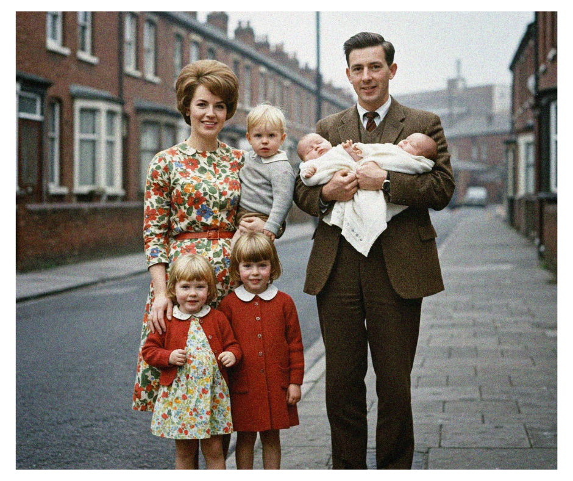

Hey Jude, Don't Make it Bad... Name Your Baby Something Fab! A Beatles Name Deep Dive
If there’s one band that soundtracked the world, it’s The Beatles. From Liverpool to Rishikesh, their music crossed continents and generations. And woven into that iconic tapestry of sound? Names! Lots of them. We're talking about girls, guys, places, pets, and even maybe a Maharishi or two.
The Fab Four weren't just musical geniuses; they were storytellers. And what's a good story without memorable characters? Sometimes they reached out directly to you, the listener, making songs feel incredibly personal. But other times, they got specific, dropping names that sparked curiosity, tugged at heartstrings, or just sounded right.
So, grab your headphones, maybe a cup of tea, and let’s take a magical mystery tour through the names immortalized in Beatles songs. Who were these people (and pets!), and did their fame in vinyl translate to bumps on the baby name charts? Let’s find out!
The Name Game: Who Were They Singing About?
The Beatles' catalogue is peppered with names, each with its own fascinating backstory. Let's meet some of the most memorable characters:
Eleanor Rigby
Ah, poor Eleanor. This haunting 1966 classic paints a picture of profound loneliness. Paul McCartney initially toyed with "Daisy Hawkins" before landing on Eleanor Rigby. Where did the name come from? Paul has said "Eleanor" might have been inspired by actress Eleanor Bron (who starred with the band in Help!), and "Rigby" came from a wine shop sign in Bristol (Rigby & Evens Ltd). The song depicts Eleanor picking up rice after a wedding, living in a dream, and keeping a "face in a jar by the door" – a stark image of isolation. She dies alone, buried by the equally lonely Father McKenzie, who darns his socks in the night. Years later, a real Eleanor Rigby gravestone was found near where John and Paul first met, adding a layer of spooky coincidence, though Paul maintains the name wasn't directly inspired by it. The song’s detached, observational style was a departure, focusing on the quiet desperation of ordinary, lonely lives.
Lucy (in the Sky with Diamonds)
This 1967 psychedelic swirl from Sgt. Pepper immediately sparked speculation. Was "Lucy in the Sky with Diamonds" a coded reference to LSD? The band always denied it. John Lennon consistently stated the inspiration was much more innocent: a nursery school drawing by his three-year-old son, Julian. Julian had drawn his classmate, Lucy O'Donnell, floating amongst stars and titled it "Lucy – in the sky with diamonds". The song's dreamlike, surreal imagery ("cellophane flowers," "newspaper taxis") was heavily influenced by Lewis Carroll's Alice in Wonderland. Paul McCartney described the song's Lucy as a kind of ethereal, almost god-like figure. Fun fact: The name Lucy later achieved actual astronomical heights when paleoanthropologist Donald Johanson, celebrating his discovery of an early hominin fossil while the song played, named her "Lucy". That fossil, in turn, inspired the name of a NASA space mission!
Hey Jude
Arguably one of the most beloved Beatles anthems, "Hey Jude" (1968) has a touching origin story. Paul McCartney wrote it for John Lennon's young son, Julian, during John and Cynthia Lennon's difficult divorce following John's affair with Yoko Ono. Paul was driving to visit Cynthia and Julian and started singing "Hey Jules, don't make it bad..." wanting to offer comfort. He changed "Jules" to "Jude" simply because it sounded better musically. The song offers encouragement: take a sad situation, acknowledge the pain ("don't carry the world upon your shoulders"), but open yourself up to love and make things better. Interestingly, John Lennon interpreted the song as being directed at him, giving him permission to leave Cynthia for Yoko. Julian himself has expressed a complex "love-hate" relationship with the song, acknowledging the kindness behind it but also its reminder of his parents' painful split.
Michelle
Ooh là là! This romantic ballad from 1965's Rubber Soul oozes Gallic charm. Paul McCartney had the tune for a while, initially humming faux-French lyrics at parties to emulate the Parisian Left Bank vibe popularised by figures like Juliette Greco. When John suggested turning it into a proper song, Paul sought help with the French lyrics. He asked Jan Vaughan, a French teacher and wife of his friend Ivan Vaughan (who introduced Paul to John!), for a French name and a phrase that rhymed. She came up with "Michelle, ma belle" ("Michelle, my beautiful") and translated "these are words that go together well" into "sont des mots qui vont très bien ensemble". John Lennon contributed the passionate "I love you, I love you, I love you" bridge, inspired by Nina Simone's "I Put a Spell on You". The song paints Michelle simply as beautiful and beloved.
Martha My Dear
Who was the "silly girl" Paul McCartney was singing to in this cheerful 1968 track from the White Album? None other than his beloved Old English Sheepdog, Martha! Paul bought Martha in 1966, and she was his constant companion during a turbulent time for the band. While Paul explicitly stated the song was for his dog, some read deeper meanings into it, interpreting lines like "don't forget me" or "Help yourself to a bit of what is all around you" as veiled references to his recent breakup with actress Jane Asher and her alleged infidelity. Regardless of subtext, the song captures a feeling of affection and perhaps gentle chiding ("Hold your head up you silly girl, look what you've done"), applicable to a pet or a person.
Dear Prudence
Another White Album gem born from the Beatles' 1968 trip to Rishikesh, India, to study Transcendental Meditation with Maharishi Mahesh Yogi. "Prudence" was Prudence Farrow, actress Mia Farrow's sister, who was also on the retreat. Prudence became so intensely focused on meditating that she barely left her bungalow for days. Worried, John and George were tasked with coaxing her out to socialize. John wrote the song as a gentle plea: "Dear Prudence, won't you come out to play? Dear Prudence, greet the brand new day... Open up your eyes, see the sunny skies". It's a beautiful, hypnotic invitation to re-engage with the world, inspired by someone taking their spiritual quest perhaps a little too seriously.
Lovely Rita
This jaunty tune from Sgt. Pepper (1967) features another memorable female character. "Rita" is a "meter maid," a term Paul McCartney heard used in America for female traffic wardens, which amused him. He liked the slightly cheeky connotation of "maid" combined with the official "meter". One story suggests the song was inspired by a real traffic warden named Meta Davies who gave Paul a parking ticket outside Abbey Road Studios. Meta claimed Paul asked her name and said it would be good for a song. However, Paul has also denied a direct real-life inspiration, calling it more of a coincidence or fantasy. Either way, the song portrays Rita, the meter maid, as an object of the narrator's quirky affection.
Sexy Sadie
Don't let the name fool you – "Sexy Sadie" wasn't about a seductive woman. This biting track from the White Album (1968) was John Lennon's thinly veiled swipe at Maharishi Mahesh Yogi. John felt disillusioned and betrayed after hearing allegations (primarily from "Magic Alex" Mardas) of the Maharishi making inappropriate advances towards Mia Farrow during the India retreat. John originally wanted to call the song "Maharishi," with much more explicit lyrics, but George Harrison persuaded him to change the title to "Sexy Sadie". The finished lyrics, "Sexy Sadie, what have you done? / You made a fool of everyone," still drip with contempt, accusing the figure of deceit.
Julia
Perhaps the most tender and personal name song, "Julia" (1968) is John Lennon's ode to his mother, Julia Lennon, who was tragically killed when he was 17. Written in India, using a finger-picking style taught to him by Donovan, the song evokes dreamlike images of his mother ("seashell eyes, windy smile") and his feeling of having lost her twice. It also weaves in a reference to his future wife, Yoko Ono, whose name means "child of the sea" in Japanese, with the line "Oceanchild, calls me". It's the only solo Lennon performance in the Beatles' catalogue, a haunting tribute to the two most important women in his life.
Penny Lane
Not a person, but a place that feels like a character. Released as a double A-side with "Strawberry Fields Forever" in 1967, "Penny Lane" is Paul McCartney's nostalgic look back at the sights and sounds of a real street and bus terminus in Liverpool familiar from his and John's childhoods. The lyrics populate the scene with vivid characters: the barber showing photos, the fireman rushing in, the nurse selling poppies, the banker – all drawn from memory. It captures a specific time and place with a blend of realism and dreamlike, slightly psychedelic imagery ("blue suburban skies" mixed with pouring rain).
Sgt. Pepper
The ultimate conceptual name! For their groundbreaking 1967 album, the Beatles decided to shed their identities and perform as a fictional group: Sgt. Pepper's Lonely Hearts Club Band. The whimsical name apparently came about on a flight when Paul McCartney misheard roadie Mal Evans asking for the salt and pepper ("S" and "P") packets on their meal trays. Sgt. Pepper acts as the album's master of ceremonies, introducing the band and later, "the one and only Billy Shears" (Ringo's persona for "With a Little Help from My Friends").
And the list goes on! Think of Desmond and Molly Jones in "Ob-La-Di, Ob-La-Da," JoJo and Loretta Martin in "Get Back," Mean Mr. Mustard, Polythene Pam, Bungalow Bill, Maxwell Edison... the Beatles certainly knew how to populate their musical world.
Did the Beatles Start a Baby Name Boom?
We know the Beatles influenced fashion, music, and culture – but did they influence what people named their babies? It's a fascinating question for us name nerds! Let's look at some of the prominent names and see if their appearance in a hit song coincided with a rise on the baby name charts, particularly in the US and UK around the time of the songs' releases.
| Name | Song Title | Release | Brief Origin/Inspiration | US Trend Around Release | UK Trend Around Release | Beatles Effect? |
|---|---|---|---|---|---|---|
| Michelle | Michelle | 1965 | French feel, Paul's party piece, Jan Vaughan's lyrics | Peaked Top 5 (1968) shortly after song release | Popularized | Strong/Likely |
| Jude | Hey Jude | 1968 | For Julian Lennon during parents' divorce | Jumped 69% in 1969 after #1 single | Boosted | Strong/Likely |
| Eleanor | Eleanor Rigby | 1966 | Actress E. Bron? Shop name? Gravestone coincidence? | Name was declining; song released during dip. Recent resurgence unrelated. | Sometimes seen as dated | Unclear/Minimal |
| Lucy | Lucy in the Sky with Diamonds | 1967 | Julian Lennon's drawing of classmate Lucy O'Donnell | Long-term staple; song released between 19th C peak & late 20th C dip. LSD link? | Popular | Unclear/Minimal |
| Julia | Julia | 1968 | John's mother Julia Lennon; Yoko Ono ("Oceanchild") | Consistently popular; no major spike after song. Major rise later (2001). | Popular | No Obvious Effect |
| Prudence | Dear Prudence | 1968 | Prudence Farrow's intense meditation in India | Remained very rare | Rare | None |
| Rita | Lovely Rita | 1967 | American "meter maid" slang; maybe traffic warden Meta Davies | Likely declining from 1940s peak when song released; fell off Top 1000 later. | Less common now | None/Negative |
| Martha | Martha My Dear | 1968 | Paul's sheepdog Martha; possible Jane Asher subtext | Long, slow decline continued after song release. Seen as dated. | More popular in UK | None |
| Sadie | Sexy Sadie | 1968 | Disillusionment with Maharishi Mahesh Yogi | Song released at name's absolute lowest point. Later resurgence unrelated. | Popular now | None/Negative (Initially?) |
| Penny | Penny Lane | 1967 | Real Liverpool street; diminutive of Penelope | Already popular (Top 100 in 60s); song likely sustained visibility. | Popular | Possible/Sustaining |
So, what does this tell us? It seems the "Beatles Baby Name Effect" was real, but selective!
- Clear Hits: Names like Michelle and Jude saw significant boosts in popularity right after their respective songs became massive hits. The romantic allure of "Michelle" and the uplifting hope of "Hey Jude" likely resonated strongly with expecting parents.
- Minimal Impact: Classic, established names like Eleanor, Lucy, and Julia didn't seem dramatically swayed by their song appearances. "Eleanor Rigby," while iconic, is quite bleak, perhaps not the vibe most parents seek. "Lucy" had the LSD association controversy, and "Julia," while beautiful, is deeply melancholic. These names had their own historical trajectories.
- No Boost for the Declining or Rare: Names already fading from their peak popularity, like Rita and Martha, weren't revived by their songs. Rita's playful portrayal and Martha's canine connection (and potential relationship drama subtext) didn't reverse their slides. The very rare Prudence remained rare, perhaps hampered by the character's withdrawn depiction and the name's prim sound.
- Negative Connotations Matter: Sadie was at its lowest point when "Sexy Sadie" came out, and the song's negative portrayal of its subject certainly didn't help matters then. Its modern resurgence is completely separate.
- Sustaining Power?: For Penny, already popular when "Penny Lane" charmed the world, the song likely helped keep the cheerful name in the public eye.
It shows that while a hit song can definitely put a name on the map or give it a boost, factors like the song's tone, the character's portrayal, and the name's existing popularity and style all play a role in whether it catches on with the baby-naming public. Pop culture influence is powerful, but unpredictable!
More Than Just a Name: Why the Beatles' Choices Resonate
Why did the Beatles bother using specific names? Why not just sing about "a girl" or "a man"? Their choices show the power a name holds in songwriting.
- Making Feelings Concrete: Abstract ideas like loneliness become instantly relatable when attached to "Eleanor Rigby" or "Father McKenzie". A name gives a universal feeling a specific, human face.
- Adding Emotional Weight: Knowing the real stories behind "Julia" (John's mother) or "Hey Jude" (Julian Lennon) adds layers of poignant depth. Even without knowing the backstory, the specificity hints at genuine emotion.
- Sketching Characters Quickly: Names help bring scenes to life. The barber in "Penny Lane," "Lovely Rita," or even the briefly mentioned Vera, Chuck, and Dave in "When I'm Sixty-Four" feel more real because they have names.
- Creating Intrigue and Legend: Names like "Lucy" or "Sexy Sadie" became iconic partly because of the speculation surrounding them. Was Lucy about drugs? Who really was Sadie? The name becomes a hook, drawing listeners into the mystery.
- Sounding Good: Sometimes, it's just about the music! The pleasing sound of "Michelle, ma belle" or the better flow of "Jude" over "Jules" shows that the pure sonic quality of a name matters in a song.
The Beatles used names in all these ways – sometimes personal, sometimes fictional, sometimes symbolic, sometimes just for the sound. It highlights how versatile and powerful naming is as a creative tool, capable of anchoring emotion, building stories, creating mystique, and enhancing the music itself.
Let It Be (Named Something Great!)
From Paul's dog Martha to John's mother Julia, from Julian Lennon's classmate Lucy to the fictional meter maid Rita, the names in Beatles songs are a rich collection of stories, inspirations, and happy accidents. They remind us that names are more than just labels; they carry history, evoke feelings, and connect us to people, places, and even moments in time.
Here at The Stork Name Drop, we're fascinated by how names weave themselves into our culture, and the Beatles provide a perfect, enduring example. Their songs not only changed music but also left a subtle, selective imprint on the world of names, sparking trends and keeping certain monikers alive in our collective memory.
Whether you're naming a baby, a pet, or even just a character in a story, finding that perfect name is a creative journey. The Beatles certainly showed us how much meaning and magic a simple name can hold.
Now over to you! What's your favorite Beatles name song? Did any Fab Four tune influence a name choice in your life or family? Share your thoughts in the comments below – we'd love to hear your stories!